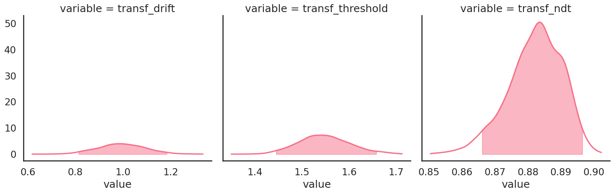
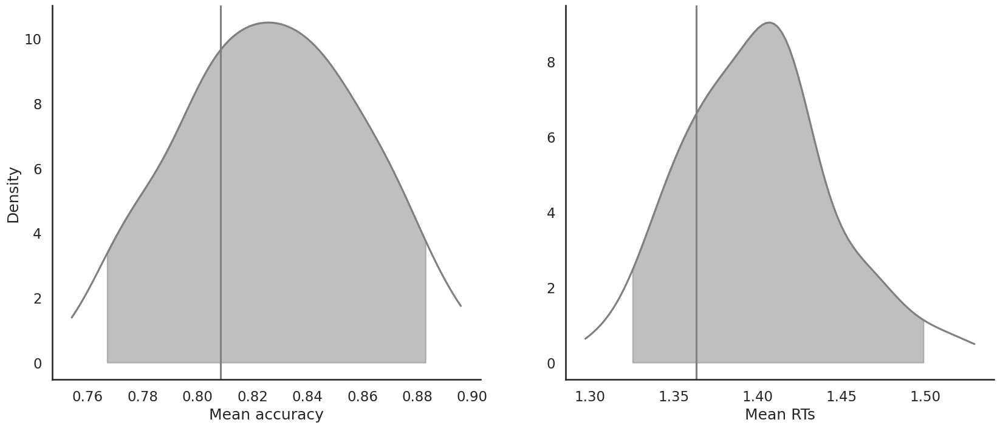

Fit the DDM on individual data
Import the data
[1]:
from rlssm.utility.load_data import load_example_dataset
data = load_example_dataset(hierarchical_levels=1)
data.head()
[1]:
| participant | block_label | trial_block | f_cor | f_inc | cor_option | inc_option | times_seen | rt | accuracy | feedback_type | |
|---|---|---|---|---|---|---|---|---|---|---|---|
| 0 | 3 | 1 | 1 | 50 | 41 | 3 | 1 | 1 | 2.456584 | 0 | 0 |
| 1 | 3 | 1 | 2 | 48 | 34 | 3 | 1 | 2 | 2.170168 | 1 | 0 |
| 2 | 3 | 1 | 3 | 52 | 46 | 4 | 2 | 1 | 1.494957 | 0 | 0 |
| 3 | 3 | 1 | 4 | 55 | 48 | 4 | 3 | 2 | 1.779351 | 0 | 0 |
| 4 | 3 | 1 | 5 | 48 | 52 | 4 | 3 | 3 | 1.853335 | 0 | 0 |
Initialize the model
[2]:
from rlssm.model.models_DDM import DDModel
model = DDModel(hierarchical_levels=1)
Using cached StanModel
Fit
[3]:
# sampling parameters
n_warmup = 500
n_sampling = 500
n_chains = 2
n_thin = 1
[4]:
model_fit = model.fit(
data,
thin=n_thin,
iter_warmup=n_warmup,
iter_sampling=n_sampling,
chains=n_chains,
pointwise_waic=False)
Fit
[5]:
# sampling parameters
n_warmup = 500
n_sampling = 1500
n_chains = 2
n_thin = 1
[6]:
model_fit = model.fit(
data,
thin=n_thin,
iter_warmup=n_warmup,
iter_sampling=n_sampling,
chains=n_chains,
pointwise_waic=False)
Fitting the model using the priors:
drift_priors {'mu': 1, 'sd': 5}
threshold_priors {'mu': 0, 'sd': 5}
ndt_priors {'mu': 0, 'sd': 5}
Checks MCMC diagnostics:
n_eff / iter looks reasonable for all parameters
0 of 3000 iterations saturated the maximum tree depth of 10 (0.0%)
E-BFMI indicated no pathological behavior
0.0 of 3000 iterations ended with a divergence (0.0%)
get Rhat
[7]:
model_fit.rhat
[7]:
| rhat | variable | |
|---|---|---|
| name | ||
| lp__ | 1.002060 | lp__ |
| drift | 1.000440 | drift |
| threshold | 1.001190 | threshold |
| ndt | 0.999874 | ndt |
| drift_ll[1] | 1.000440 | drift_ll[1] |
| ... | ... | ... |
| log_lik[236] | 1.000890 | log_lik[236] |
| log_lik[237] | 0.999597 | log_lik[237] |
| log_lik[238] | 1.001380 | log_lik[238] |
| log_lik[239] | 1.001020 | log_lik[239] |
| log_lik[240] | 1.001420 | log_lik[240] |
1207 rows × 2 columns
get wAIC
[8]:
model_fit.waic
[8]:
{'lppd': -139.18139956067117,
'p_waic': 3.6955078073836316,
'waic': 285.7538147361096,
'waic_se': 32.92392024070494}
[9]:
model_fit.plot_posteriors(height=5, show_intervals="HDI", alpha_intervals=.05)
[9]:
<seaborn.axisgrid.FacetGrid at 0x7fd4a3b32e20>

[10]:
model_fit.samples.describe()
[10]:
| transf_drift | transf_ndt | transf_threshold | |
|---|---|---|---|
| count | 3000.000000 | 3000.000000 | 3000.000000 |
| mean | 0.993156 | 0.882174 | 1.547798 |
| std | 0.099622 | 0.008184 | 0.054414 |
| min | 0.618427 | 0.850453 | 1.350220 |
| 25% | 0.927934 | 0.877171 | 1.511100 |
| 50% | 0.991904 | 0.882857 | 1.545715 |
| 75% | 1.060670 | 0.888255 | 1.583540 |
| max | 1.335190 | 0.902249 | 1.712580 |
[11]:
import seaborn as sns
sns.set(context="talk",
style="white",
palette="husl",
rc={'figure.figsize': (15, 8)})
[12]:
model_fit.plot_posteriors(height=5, show_intervals="HDI", alpha_intervals=.05);

Posterior predictives
[13]:
model_fit.plot_mean_posterior_predictives(n_posterior_predictives=100, figsize=(20, 8), show_intervals='HDI')
[13]:


[14]:
model_fit.plot_quantiles_posterior_predictives(n_posterior_predictives=100, kind='shades')
[14]:


[15]:
pp_summary = model_fit.get_posterior_predictives_summary(n_posterior_predictives=100)
pp_summary
[15]:
| mean_accuracy | mean_rt | skewness | quant_10_rt_low | quant_30_rt_low | quant_50_rt_low | quant_70_rt_low | quant_90_rt_low | quant_10_rt_up | quant_30_rt_up | quant_50_rt_up | quant_70_rt_up | quant_90_rt_up | |
|---|---|---|---|---|---|---|---|---|---|---|---|---|---|
| sample | |||||||||||||
| 1 | 0.887500 | 1.382798 | 1.877329 | 1.018506 | 1.089906 | 1.159706 | 1.345106 | 1.696106 | 1.008306 | 1.109506 | 1.288706 | 1.488706 | 1.958506 |
| 2 | 0.895833 | 1.406692 | 1.956740 | 1.018555 | 1.120955 | 1.295355 | 1.446955 | 2.232955 | 1.035955 | 1.159955 | 1.284355 | 1.468955 | 1.892555 |
| 3 | 0.862500 | 1.456515 | 1.897001 | 1.059786 | 1.221386 | 1.299586 | 1.521786 | 1.781786 | 1.028586 | 1.170386 | 1.341586 | 1.544986 | 2.028186 |
| 4 | 0.841667 | 1.412847 | 1.862418 | 1.034339 | 1.132739 | 1.319639 | 1.418239 | 1.910639 | 1.043139 | 1.167139 | 1.314139 | 1.528039 | 1.941439 |
| 5 | 0.804167 | 1.376799 | 2.290501 | 1.026462 | 1.134262 | 1.289862 | 1.500262 | 2.059662 | 1.012062 | 1.096662 | 1.219862 | 1.413662 | 1.863862 |
| ... | ... | ... | ... | ... | ... | ... | ... | ... | ... | ... | ... | ... | ... |
| 96 | 0.854167 | 1.371987 | 2.565065 | 1.097050 | 1.174650 | 1.215850 | 1.336450 | 1.637650 | 1.054850 | 1.167650 | 1.275850 | 1.465650 | 1.759450 |
| 97 | 0.837500 | 1.409335 | 2.687627 | 1.052597 | 1.192597 | 1.299197 | 1.460997 | 1.804397 | 1.026197 | 1.155197 | 1.289197 | 1.515197 | 1.867197 |
| 98 | 0.825000 | 1.396323 | 2.521695 | 1.016985 | 1.177185 | 1.301685 | 1.412585 | 1.891885 | 1.027685 | 1.133785 | 1.272685 | 1.477785 | 1.987085 |
| 99 | 0.854167 | 1.362669 | 1.469335 | 1.022361 | 1.275561 | 1.413361 | 1.531961 | 2.202161 | 1.023161 | 1.115961 | 1.239361 | 1.434961 | 1.760161 |
| 100 | 0.804167 | 1.413133 | 1.744404 | 1.023837 | 1.119237 | 1.185437 | 1.394237 | 1.884437 | 1.041237 | 1.126637 | 1.288437 | 1.517837 | 2.031437 |
100 rows × 13 columns
[16]:
import numpy as np
import pandas as pd
# Define new grouping variables, in this case, for the different choice pairs, but any grouping var can do
data['choice_pair'] = 'AB'
data.loc[(data.cor_option == 3) & (data.inc_option == 1), 'choice_pair'] = 'AC'
data.loc[(data.cor_option == 4) & (data.inc_option == 2), 'choice_pair'] = 'BD'
data.loc[(data.cor_option == 4) & (data.inc_option == 3), 'choice_pair'] = 'CD'
data['block_bins'] = pd.cut(data.trial_block, 8, labels=np.arange(1, 9))
Grouped
[17]:
model_fit.plot_mean_grouped_posterior_predictives(grouping_vars=['block_bins'],
n_posterior_predictives=100,
figsize=(20, 8))
[17]:


[18]:
model_fit.plot_quantiles_grouped_posterior_predictives(
n_posterior_predictives=100,
grouping_var='choice_pair',
kind='shades',
quantiles=[.1, .3, .5, .7, .9])
[18]:


[19]:
model_fit.get_grouped_posterior_predictives_summary(
grouping_vars=['block_bins'],
quantiles=[.3, .5, .7],
n_posterior_predictives=100)
[19]:
| mean_accuracy | mean_rt | skewness | quant_30_rt_low | quant_30_rt_up | quant_50_rt_low | quant_50_rt_up | quant_70_rt_low | quant_70_rt_up | ||
|---|---|---|---|---|---|---|---|---|---|---|
| block_bins | sample | |||||||||
| 1 | 1 | 0.966667 | 1.362906 | 1.984083 | 1.566706 | 1.135906 | 1.566706 | 1.260706 | 1.566706 | 1.421306 |
| 2 | 0.900000 | 1.389988 | 1.120600 | 1.187555 | 1.162955 | 1.240355 | 1.235355 | 1.377155 | 1.452755 | |
| 3 | 0.833333 | 1.450586 | 0.549996 | 1.103386 | 1.045786 | 1.342586 | 1.482586 | 1.944186 | 1.635186 | |
| 4 | 0.866667 | 1.383772 | 2.542791 | 1.154439 | 1.135139 | 1.170139 | 1.255639 | 1.190139 | 1.472639 | |
| 5 | 0.766667 | 1.322162 | 3.525412 | 1.096862 | 1.142462 | 1.135862 | 1.178862 | 1.521662 | 1.248462 | |
| ... | ... | ... | ... | ... | ... | ... | ... | ... | ... | ... |
| 8 | 96 | 0.800000 | 1.480183 | 1.028168 | 1.111350 | 1.371650 | 1.213350 | 1.508850 | 1.401850 | 1.617950 |
| 97 | 0.900000 | 1.446597 | 1.187158 | 1.222597 | 1.167397 | 1.332197 | 1.286197 | 1.553397 | 1.572397 | |
| 98 | 0.933333 | 1.337318 | 1.460401 | 0.974885 | 1.130185 | 0.989685 | 1.274185 | 1.004485 | 1.454985 | |
| 99 | 0.833333 | 1.380261 | 2.457644 | 1.173161 | 1.111161 | 1.208361 | 1.222361 | 1.489961 | 1.466761 | |
| 100 | 0.866667 | 1.449904 | 1.223034 | 1.407437 | 1.159937 | 1.655437 | 1.264437 | 1.896737 | 1.379937 |
800 rows × 9 columns
[20]:
model_fit.plot_mean_grouped_posterior_predictives(grouping_vars=['block_bins'],
n_posterior_predictives=100,
figsize=(20, 8));

[21]:
model_fit.plot_quantiles_grouped_posterior_predictives(
n_posterior_predictives=100,
grouping_var='choice_pair',
kind='shades',
quantiles=[.1, .3, .5, .7, .9]);